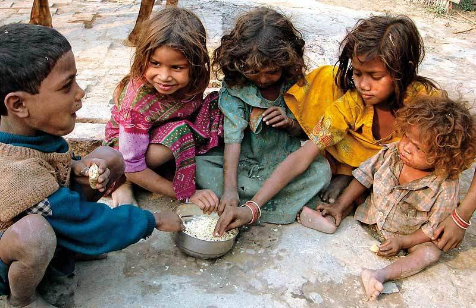
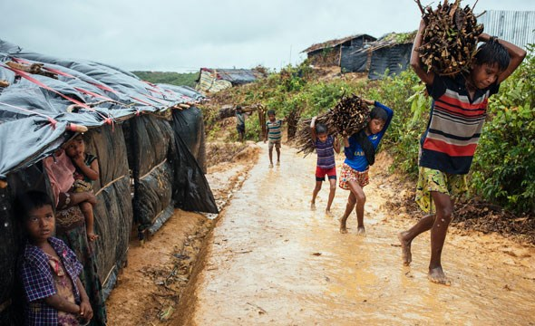
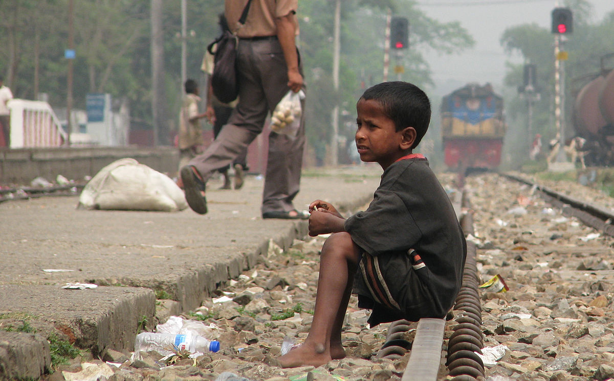

Gjør en forskjell

Risikoutsatte barn
Er du barn i Strømmestiftelsens prosjektland, er sjansen stor for at du er en av mange som er trengt
inn i et hjørne av tapt skolegang, utrygghet hjemme, få voksne forbilder og stengte dører. Et liv
på gata, et altfor tidlig ekteskap, en voldelig gjeng, menneskehandel og misbruk er alle reelle farer.
Barneekteskap, trafficking til slaveri eller sexhandel, rekruttering til fundamentalistgrupperinger
– mange står klare til å utnytte disse barna. Ofte mangler de voksne forbilder. Skolefrafallet er
høyt.

Jobb gir muligheter
Er du mor eller far og ikke har jobb, klarer du ofte ikke skaffe nok mat til barna dine. Du har heller
ikke råd til å sende dem på skolen. Kanskje kan du ikke hjelpe dem med leksene, fordi du selv ikke
kan lese eller skrive. Ofte må du låse barna inne hjemme alene mens du selv drar ut hele dagen for
å skaffe en inntekt. Livet er uforutsigbart, du og barna dine lever fra hånd til munn. Det finnes
ikke rom for uforutsette utgifter, som penger til nødvendige medisiner hvis noen blir syke. Du drømmer
om at de skal få et bedre liv enn deg. Hvis du bare hadde hatt en jobb!

Grensesprengende muligheter
Mangelen på jobb svekker status og hindrer både barn, ungdom og voksne i å være med på å skape utvikling.
Problemet stopper ikke ved et lands grenser. Ungdom mangler skolegang, praksis og yrkeserfaring.
Voksne mangler lese- og skrivekunnskaper og tilgang til finansielle tjenester som sparing, lån og
forsikringer. Alle trenger tro på seg selv og trygge nettverk som kan styrke dem